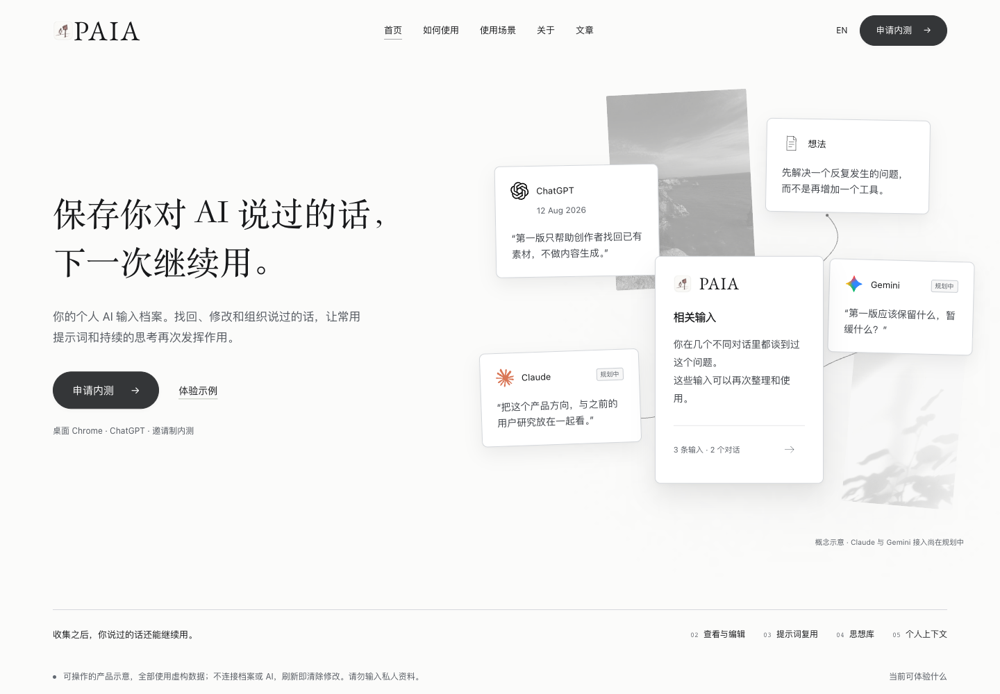
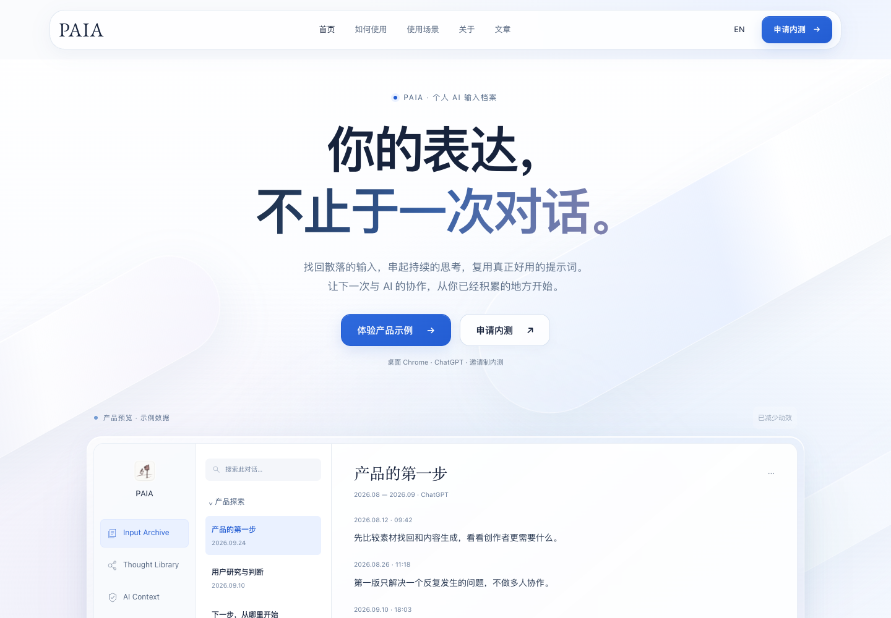

PAIA / WEBSITE REVIEW / DRAFT同一份文案，不同的空间组织。
基于正式官网制作的独立候选，不采用被否决的 PR #240。正式网站未被替换。先打开可操作页面，再用下方真实浏览器截图比较四处改动。
预览包不包含字体文件，离线使用系统字体；截图使用官网原有字体。示例文字均为虚构内容，不连接私人档案或 AI。申请、政策等链接前往现有正式网站。
历史视觉对照
第一版蓝白提交 282bfe5e 采用居中标题、下移的产品窗口。更早的 77f4af96 使用中性底色和卡片组合。两者已实际运行比对；本候选没有回滚首屏。
77f4af96 / 蓝白改版之前
282bfe5e / 第一版蓝白